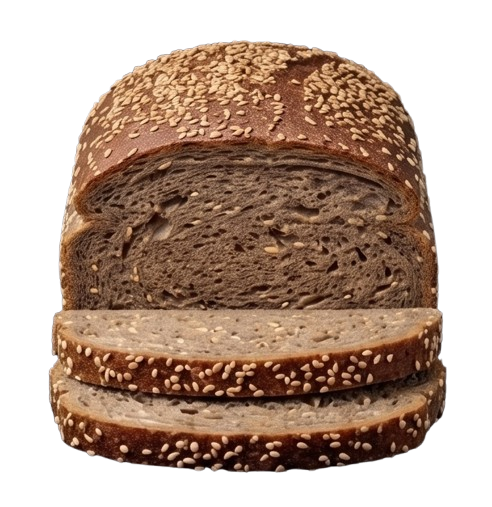
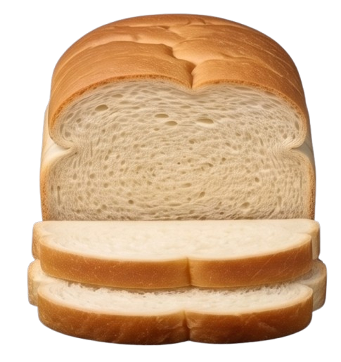
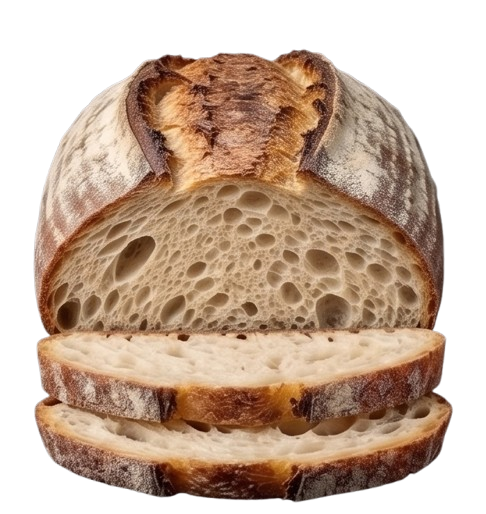
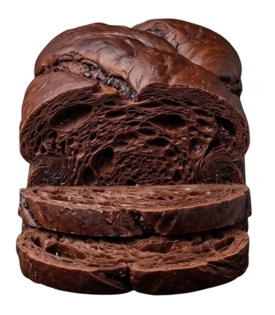
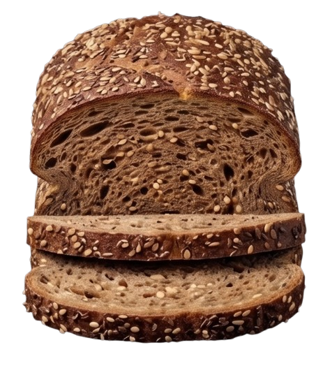
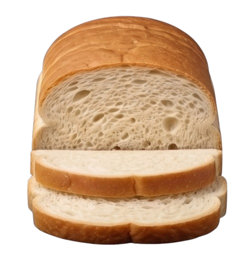

-

SEEDED RYE
A deep, earthy flavor profile enriched with toasted sesame
and sunflower seeds.
Dense texture, high fiber, and a nutty finish.
-

CLASSIC WHITE
The timeless staple made with premium wheat flour and our
signature wild starter.
Silky interior, mild tang, and a soft, golden crust.
-

PLAIN SOURDOUGH
The pure essence of fermentation. Long-rested for maximum
flavor complexity.
Large airy crumb (open crumb), bold sourdough tang, and a
blistered, crunchy crust.
-

CHOCOLATE TWIST
A decadent crossover where artisanal baking meets dessert.
Infused with dark cocoa and chocolate swirls.
Rich, velvety texture with a subtle sweetness balanced by
natural acidity.
-

MULTIGRAIN FLAX
A nutrient-dense loaf featuring a blend of whole grains and
flax seeds for a rustic feel.
Hearty bite, complex grain aroma, and an incredible source
of energy.
-

PLAIN WHITE
Simple, honest, and incredibly versatile. The perfect
companion for any meal.
Light and fluffy with a delicate aroma of fresh wheat.